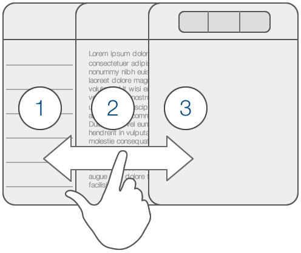

This page gives an overview of the Editorial UI and also contains some useful tips and tricks to help you get the most out of it.
The app is organized in three main panels that you can show and hide by swiping left and right.
In the file browser you can view a list of your files and folders, and create new documents.
You can work with local files that are only stored on your device, or sync with Dropbox. When you first select the Dropbox folder, you’ll be asked to link your Dropbox account with Editorial.
By default, Editorial syncs with the folder /Apps/Editorial in your Dropbox. If you want to use a different folder, you can change this in the settings.
The bottom toolbar lets you to add a new document (+ button), change the sort order of the list (by date or by name), open the settings, or start a Dropbox sync. Note that Editorial syncs with Dropbox automatically, so you only have to trigger a manual sync if you made changes on other devices less than a few minutes ago.
To delete or move files, tap the Edit button at the top. This allows you to select multiple files and then choose the action you want to perform at the bottom. You can also use a swipe gesture to delete single files.
When you tap the + button, the template picker is shown, and you can select the type of document you’d like to create. The document templates are all empty by default, but you can easily create your own templates by tapping “New Template” at the bottom of the picker.
Templates can be useful for creating documents that have a fixed format, e.g. report cards, but Editorial’s template system is actually much more powerful than that. Each template is a complete workflow that can include custom logic or even UI that is shown before or after the document is created. For example, if you prefer to enter a filename before a document is created, you can easily do this by adding a Request Text Input action before the Create Document action (which is included by default in a template workflow).
To learn more about workflows, please refer to the Building Workflows chapter – everything you can do in a workflow also applies to document templates.
The Aa button allows you to adjust editor-related settings quickly. On the iPhone, you’ll find the button at the top of the document outline (tap the title first).
Editorial extends the standard iOS keyboard with an additional row of special characters that are often used in Markdown. Using it should be straightforward if you’re familiar with the standard iOS keyboard, but the extra row has some additional functionality you might not be aware of:
Snippets are little pieces of text that you can insert quickly by typing abbreviations, or by selecting them from the snippet list that is available on the extended keyboard.
A snippet is basically the same as a workflow with a single Replace Selected Text action, but it is much faster to create.
Snippets can contain any of the built-in variables, so you can use placeholders for the current date, selected text, clipboard contents, or even the title of the page currently loaded in the browser panel. You can also define where the caret should be after inserting the snippet.
You can reveal a collection of different accessory panels with a left swipe gesture in the editor. These panels contain helpful additional tools that are not directly related to editing text.
When you’re editing a Markdown or Fountain document, this panel shows an HTML preview of your current document. It is refreshed automatically when you show it.
Using the Show HTML action in a workflow, you can also use this panel for showing dynamically-generated, custom HTML.
Editorial includes an in-app web browser for quick research while you’re writing. To open a browser tab, simply tap the “Add tab” button in the accessory panel.
You can automate some aspects of the web browser using workflows, e.g. with the action-open-url workflow action. The current URL or page title of the browser can also be used within snippets, e.g. if you want to create a snippet that inserts a Markdown link to the currently loaded page.
The console shows output from Python scripts (see Scripting Editorial with Python), and can be used to enter Python commands interactively.
You can open the console from an empty web browser tab.
Even if you’re not interested in the programming part, you might find it useful as a calculator – just try entering some mathematical expressions like 12 * 4 + 5. It is also used by the Console Output workflow action.